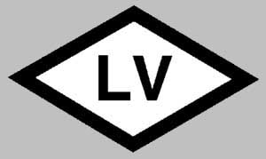
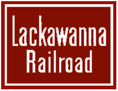
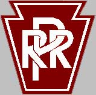

Tours of Local
Railroad
Sites - and Locomotive Portraits.
Scot Lawrence

My
Ferroequinearchaeological
tours
A History of Rochester, NY Railroads
Lehigh Valley Railroad, Sayre PA
Lehigh Valley Railroad, VanEtten Junction.
Lehigh Valley Railroad, Manchester NY
LV and Erie coal transfer trestle in Waverly, NY
Erie
Railroad
- the last surviving "southern tier" semaphore
DL&W Railroad, South Waverly PA
DL&W Railroad, Mount Morris, NY station
DL&W Railroad - a tour from
Binghamton
to Buffalo (in progress)
Pennsylvania Railroad, Sodus Point, NY
Genesee Junction turntable, near Rochester NY
Tour of some Maine 2-footer sites, Phillips and Wiscasset - 2005
A
tour around the Finger Lakes Region.
Tours by other railfans.
Lehigh Valley Railroad, McLean - Freeville NY. By Joshua Blay
Railroads in Texas from Fort Worth, TX, and Beyond! - by HomeAdvisor.
My locomotive
portraits,
and other train pics.
Maine 2-foot gauge GE 23ton diesel
LAL
MOW
cars,
and
G&W
salt hoppers
My train pics on RailroadForums.com
My train pics on Railpictures.net
My train pics on NErail photo archive.